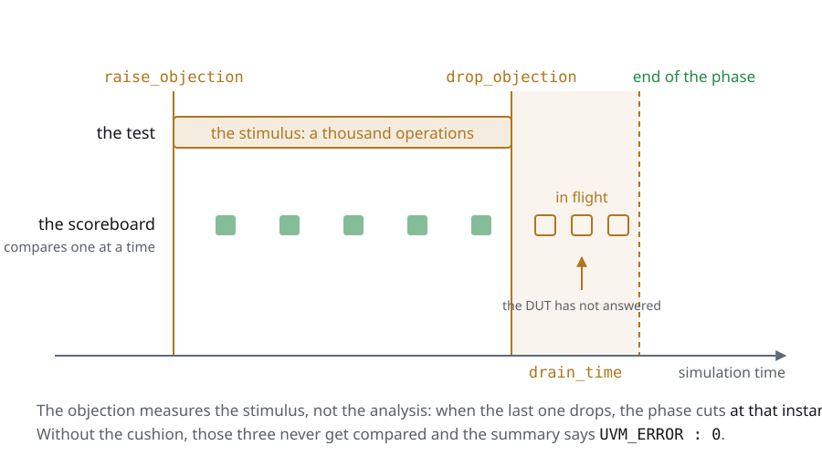
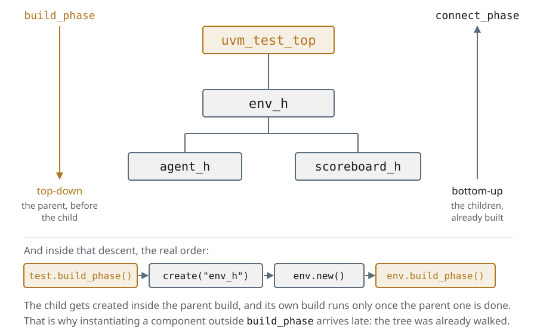
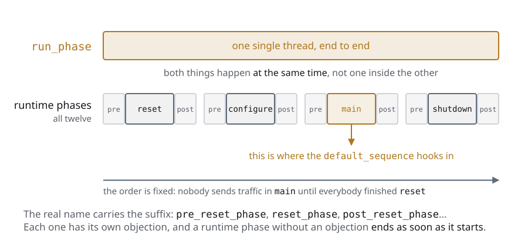
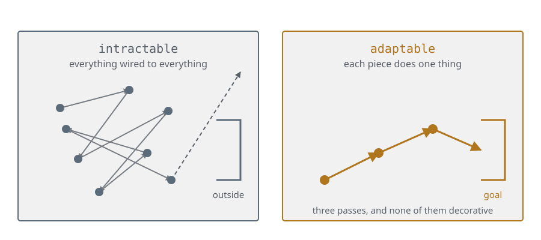
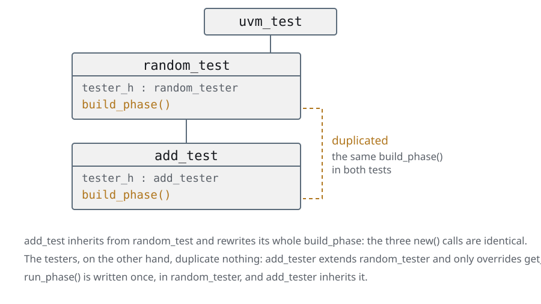
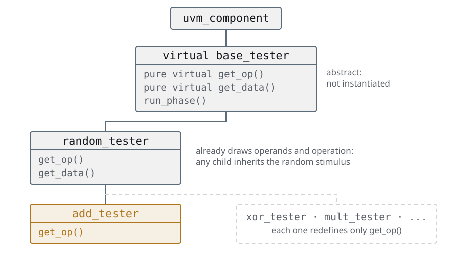
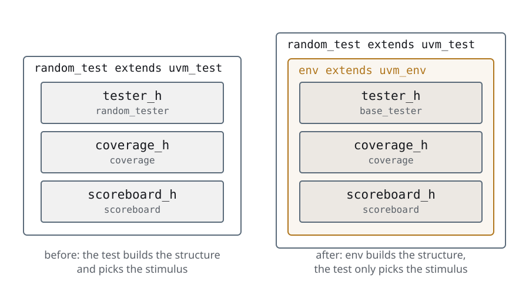
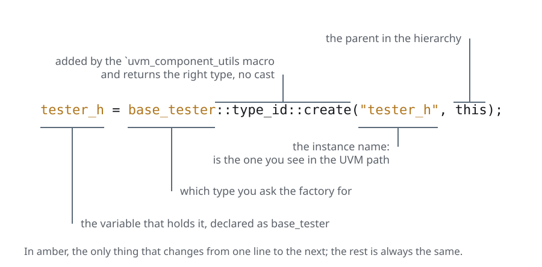
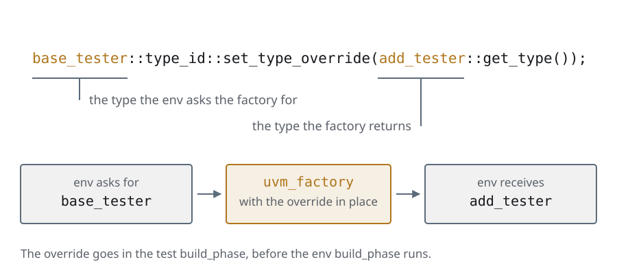
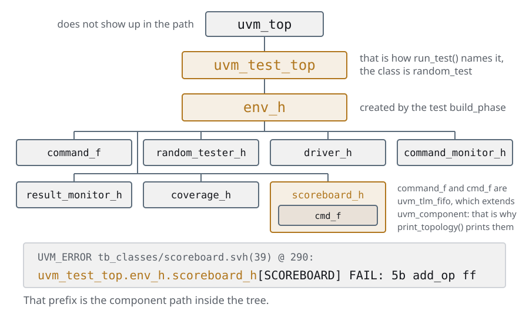

Day 3UVM walks in
The same slides as the deck, with the instructor notes inside the text and the complete code. If you are taking the course on your own, start here and keep the deck alongside for the reviews.
Yesterday we left…
Where the testbench stands
- The day 1 testbench without a single module: three classes, one that binds
them, and a
topthat only instantiates the DUT and the BFM - The BFM gets into the classes through a virtual interface, which is the only way a class has of touching signals
- And the factory is already written by hand: a
casethat has to be edited every time a new type shows up. Today the one you do not edit shows up
Day 3 is where UVM walks in, so the recap has an extra job: making it clear that
what is coming replaces pieces the student already wrote, and is not a pile
of new pieces to learn from scratch. The whole unit can be read as "this thing
you did by hand, the library brings it done".
The third bullet is the hook: the case of 060 is exactly what
`uvm_component_utils does on its own, and saying it here stops the macro
from being a magic formula.
Agenda
Day 3 · ≈ 4 h 30 · unit 4 · UVM walks in
- Tests
- Components and phases
- The env: structure and stimulus
- Reporting: verbosity and actions
By the end of the day you can:
- Explain why a UVM simulation ends at
t=0if nobody raises an objection - Say why
build_phaseruns top-down andconnect_phasethe other way round - Make a scoreboard that fails say something more than "it failed"
The third one is the one that pays off the most in the long run and the one most
underestimated: it is row 10 of the closing self-assessment and the one aiming at
the 47 % of day 1. A uvm_error that prints "FAIL" leaves whoever is debugging
where they were; one that prints the transaction, the prediction and the time
saves them half a morning.
The first two are library mechanics and they are the ones most often answered
with an "it rings a bell". The second exercise of the day exists so that they
stop ringing and start having been suffered.
Tests
Compile once, pick the test from the command line
- The object-based testbench has the stimulus inside: changing test means changing code and compiling again
- A thousand tests at five minutes of compilation each are 5000 minutes: three and a half days of machine time to run nothing new
- UVM turns the order around: the testbench gets compiled once, and the test that runs is picked when the simulation starts
$ ./obj_dir/top/sim +UVM_TESTNAME=random_test
$ ./obj_dir/top/sim +UVM_TESTNAME=add_test # the same binary
- That is what this unit buys, and what gets paid with the ceremony that comes: registration in the factory, a constructor with a fixed signature and phases
The arithmetic is UVM's commercial argument, and it is worth saying it with the numbers
in hand: it is not that the modular testbench is wrong, it is that it does not scale.
If possible, live: compile once and run the two lines above. Let them
see that the second one compiles nothing.
What gets collected from the object-based testbench: the testbench is already split into tester,
coverage and scoreboard, and that is why only the tester can be changed. What gets
paid up front: in the components those three classes stop being loose objects that
the test new()s and become components of the tree.
Tests
The top: instantiate, publish the interface, start
code/u4/tests/top.sv · #run-test
initial begin
// null and "*": from the root and visible to the whole tree. See the
// uvm_config_db slide.
uvm_config_db#(virtual vtalu_bfm)::set(null, "*", "bfm", bfm);
// UVM reads +UVM_TESTNAME, and builds THAT test with the factory.
run_test();el archivo entero, 31 líneas
module top;
import uvm_pkg::*;
`include "uvm_macros.svh"
// Our classes and macros, same as in the modular version.
import vtalu_pkg::*;
`include "vtalu_macros.svh"
vtalu_bfm bfm ();
vtalu DUT (
.A(bfm.A),
.B(bfm.B),
.op(bfm.op_set),
.clk(bfm.clk),
.reset_n(bfm.reset_n),
.start(bfm.start),
.done(bfm.done),
.ovf(bfm.ovf),
.result(bfm.result)
);
initial begin
// null and "*": from the root and visible to the whole tree. See the
// uvm_config_db slide.
uvm_config_db#(virtual vtalu_bfm)::set(null, "*", "bfm", bfm);
// UVM reads +UVM_TESTNAME, and builds THAT test with the factory.
run_test();
end
endmodule : top- The
topis still a module: it instantiates the BFM and the DUT the same as before. The only new thing is these two lines run_test()with no argument means "whichever+UVM_TESTNAMEsays". With an argument —run_test("random_test")— that one becomes the default, and+UVM_TESTNAMEstill overrides it from the command line- Before
run_test()there is not a single UVM object alive: that is why thesetgoes here
The virtual interface gets passed through the config_db because classes do not see the
signals of the module: bfm lives in top, and random_test is an object that gets
created at simulation time. There is no way to hand it over through the constructor —
uvm_component's constructor only accepts name and parent.
It is worth pointing at the order: first the set, then run_test(). The other way round
the test gets built before the data is in the database and the get fails with
the fatal. It is a mistake you rarely see because almost nobody writes the top the wrong way
round, but it explains why the set cannot go in a separate initial.
The slide that follows is the one to explain well: it is mistake number one of
whoever starts with UVM.
Tests
uvm_config_db: the testbench's mailbox
- A global and typed database: the
#(...)is part of the key - Four arguments: scope (
cntxt,inst_name), name and data - The scope is a hierarchical path, and that is where the whole point is
code/u4/tests/config_db.svh// -- IN THE TOP -- top is a module, not a uvm_component ---------------------
// cntxt = null : the scope starts at the UVM root
// inst = "*" : visible to the whole component tree
uvm_config_db #(virtual vtalu_bfm)::set(null, "*", "bfm", bfm);
// -- IN A COMPONENT -- always inside build_phase ----------------------------
// cntxt = this : the scope is the hierarchical path of THIS component
// inst = "" : with no suffix, the path is exactly the component's
if (!uvm_config_db #(virtual vtalu_bfm)::get(this, "", "bfm", bfm))
`uvm_fatal("DRIVER", "Failed to get BFM")
// The 3rd argument ("bfm") is the NAME of the datum inside the database.
// If the string in the set and the one in the get are not identical, this still
// compiles and blows up at run time with a null pointer.The first two arguments are where, the third is what. In the set of the
top it is null, "*" because top is a module, it is not in the UVM tree: the
translation is "from the root, visible to everybody".
In the get it is this, "", that is, "me". It is worth writing on the board the
path that comes out: uvm_test_top.env_h.driver_h.
And the shortcut to warn against from the start: get(null, "*", ...) also
compiles and also works — it searches the whole tree and keeps the first thing it
finds. With a single interface you never notice. The day the testbench
has two, the driver of bus A can end up driving bus B, and it does not fail:
it lies. It is one of those mistakes that get paid for three months later.
Tests
A test in three parts: 1 · register it
code/u4/tests/tb_classes/random_test.svh · #class-headclass random_test extends uvm_test;
`uvm_component_utils(random_test);
virtual vtalu_bfm bfm;el archivo entero, 41 líneas
// The first UVM test of the course. The five steps this class puts together
// --registration, constructor, build_phase, run_phase and objections-- are
// explained one by one in the slides of the tests section.
class random_test extends uvm_test;
`uvm_component_utils(random_test);
virtual vtalu_bfm bfm;
function new(string name, uvm_component parent);
super.new(name, parent);
endfunction : new
// The get goes in build_phase and not in the constructor: when the
// constructor runs, the tree does not exist yet.
function void build_phase(uvm_phase phase);
if (!uvm_config_db#(virtual vtalu_bfm)::get(this, "", "bfm", bfm))
`uvm_fatal("RANDOM TEST", "Failed to get BFM")
endfunction : build_phase
task run_phase(uvm_phase phase);
random_tester random_tester_h;
coverage coverage_h;
scoreboard scoreboard_h;
phase.raise_objection(this);
random_tester_h = new(bfm);
coverage_h = new(bfm);
scoreboard_h = new(bfm);
fork
coverage_h.execute();
scoreboard_h.execute();
join_none
random_tester_h.execute();
phase.drop_objection(this);
endtask : run_phase
endclassrandom_testextendsuvm_test, which extendsuvm_component: it is a node of the tree, not a loose object- The
`uvm_component_utilsmacro **enrols it in the factory**. Without that line,+UVM_TESTNAME=random_testfinds nothing and UVM aborts - The handle to the virtual interface gets declared here and filled in in the
build_phase: they are two different moments
It is the first time the factory shows up for real, and you still cannot see what it is for: here it only acts as a directory of names. The second half —creating by type and being able to substitute it from outside— arrives in the env with the overrides. The semicolon after the macro is redundant and UVM tolerates it. It is in the code of the book and we left it the same so that whoever compares does not get dizzy, but if somebody asks: it is not needed.
Tests
2 · the constructor and the build_phase
code/u4/tests/tb_classes/random_test.svh · #constructor-and-build function new(string name, uvm_component parent);
super.new(name, parent);
endfunction : new
// The get goes in build_phase and not in the constructor: when the
// constructor runs, the tree does not exist yet.
function void build_phase(uvm_phase phase);
if (!uvm_config_db#(virtual vtalu_bfm)::get(this, "", "bfm", bfm))
`uvm_fatal("RANDOM TEST", "Failed to get BFM")
endfunction : build_phaseel archivo entero, 41 líneas
// The first UVM test of the course. The five steps this class puts together
// --registration, constructor, build_phase, run_phase and objections-- are
// explained one by one in the slides of the tests section.
class random_test extends uvm_test;
`uvm_component_utils(random_test);
virtual vtalu_bfm bfm;
function new(string name, uvm_component parent);
super.new(name, parent);
endfunction : new
// The get goes in build_phase and not in the constructor: when the
// constructor runs, the tree does not exist yet.
function void build_phase(uvm_phase phase);
if (!uvm_config_db#(virtual vtalu_bfm)::get(this, "", "bfm", bfm))
`uvm_fatal("RANDOM TEST", "Failed to get BFM")
endfunction : build_phase
task run_phase(uvm_phase phase);
random_tester random_tester_h;
coverage coverage_h;
scoreboard scoreboard_h;
phase.raise_objection(this);
random_tester_h = new(bfm);
coverage_h = new(bfm);
scoreboard_h = new(bfm);
fork
coverage_h.execute();
scoreboard_h.execute();
join_none
random_tester_h.execute();
phase.drop_objection(this);
endtask : run_phase
endclass- The constructor of a
uvm_componenthas a fixed signature:nameandparent, in that order, andsuper.new(name, parent)as the first line - The
getof the config_db goes inbuild_phase, not in the constructor: when the constructor runs the tree is still being assembled if (!get(...)) uvm_fatal: thegetreturns a bit. Ignoring it leaves the handle atnulland the failure shows up a hundred lines later, in another file
The fixed signature is the first thing everybody breaks: a constructor with one
argument too many and the factory cannot create it, because it always calls with
(name, parent).
build_phase is a phase, not a function you call yourself: UVM walks it
top-down over the already assembled tree. In this test you cannot tell yet, because the
tree is a single node; in the components, when the env builds its children, the
top-down order is what makes the parent exist before the child.
The fatal is not paranoia: without it, a typo in the name of the data —"bfm" against
"BFM"— gives a simulation that runs, sends not one stimulus and finishes with 0
errors.
Tests
3 · the run_phase: this is where the simulation happens
code/u4/tests/tb_classes/random_test.svh · #run_phase task run_phase(uvm_phase phase);
random_tester random_tester_h;
coverage coverage_h;
scoreboard scoreboard_h;
phase.raise_objection(this);
random_tester_h = new(bfm);
coverage_h = new(bfm);
scoreboard_h = new(bfm);
fork
coverage_h.execute();
scoreboard_h.execute();
join_none
random_tester_h.execute();
phase.drop_objection(this);
endtask : run_phaseel archivo entero, 41 líneas
// The first UVM test of the course. The five steps this class puts together
// --registration, constructor, build_phase, run_phase and objections-- are
// explained one by one in the slides of the tests section.
class random_test extends uvm_test;
`uvm_component_utils(random_test);
virtual vtalu_bfm bfm;
function new(string name, uvm_component parent);
super.new(name, parent);
endfunction : new
// The get goes in build_phase and not in the constructor: when the
// constructor runs, the tree does not exist yet.
function void build_phase(uvm_phase phase);
if (!uvm_config_db#(virtual vtalu_bfm)::get(this, "", "bfm", bfm))
`uvm_fatal("RANDOM TEST", "Failed to get BFM")
endfunction : build_phase
task run_phase(uvm_phase phase);
random_tester random_tester_h;
coverage coverage_h;
scoreboard scoreboard_h;
phase.raise_objection(this);
random_tester_h = new(bfm);
coverage_h = new(bfm);
scoreboard_h = new(bfm);
fork
coverage_h.execute();
scoreboard_h.execute();
join_none
random_tester_h.execute();
phase.drop_objection(this);
endtask : run_phase
endclass- It is the same body as the
execute()of the object-based testbench: tester, coverage and scoreboard, with the two observers infork ... join_none - What changes is who calls it: before it was called by the
topmodule, now it is called by UVM when the run phase's turn comes - The two new lines are the
raiseand thedropof the objection, which are the ones that decide when everything ends
It is worth showing it next to the tb.execute() of the object-based testbench: the stimulus did not
change by one line. The only thing we did was move it inside a class that
UVM knows how to create and call. That is the whole job of this unit.
join_none and not join: coverage and scoreboard are infinite loops that watch
the signals. If we waited for them to finish, it never finishes.
And the one people miss: the simulation does not last as long as the run_phase lasts, it lasts as
long as the objections last. That is what comes now.
Tests
Objections: who decides when it ends
task run_phase(uvm_phase phase);
phase.raise_objection(this); // "I still have work"
... // the stimulus
phase.drop_objection(this); // "done, as far as I am concerned it can end"
endtask
- Every
run_phaseruns in parallel: none of them can decide on its own when to finish. UVM counts, and the phase ends when the last objection drops - Without
raise_objectionthe simulation ends at time 0, and the test passes with 0 errors without having sent a single stimulus - Without
drop_objectionit never ends: there is no error, the simulation just keeps running - Both symptoms are silent, and that is why two plusargs exist:
+UVM_OBJECTION_TRACEsays who raised it and who dropped it, and+UVM_TIMEOUTputs a ceiling on the run
It is the mechanism that decides how long the simulation lasts, and it is the one that produces the
two classic hangs of the first week. Worth writing the two failures on the
board, because the student is going to see them before any DUT bug.
The rule of thumb: the objection gets raised by whoever has work, and dropped
by the same one. In this course it is always the test. Never raise it in a
component and drop it in another one — that is how a real testbench hangs.
And a third participant is missing, which is the next slide: the objection knows
when the test finished sending, not when the scoreboard finished
comparing. That is the difference the drain_time pays for.
And the day 6 hook: set_automatic_phase_objection(1) is this same thing, done
by the sequencer instead of by the test.
Tests
The end that is not the end: drain_time
- The objection says "I finished sending". It does not say "I finished comparing": between the two there is a scoreboard with a FIFO inside and results the DUT has not answered yet
- When the last objection drops the phase cuts at that instant: what
was left in flight does not arrive, nobody compares it, and the summary says
UVM_ERROR : 0
task run_phase(uvm_phase phase);
phase.get_objection().set_drain_time(this, 200ns); // a cushion after the last drop
phase.raise_objection(this);
... // the stimulus
phase.drop_objection(this);
endtask
- The
drain_timeis a number picked by eye. The version with a criterion isphase_ready_to_end(): UVM calls it when the last objection dropped, and the component that still has work raises one more and the phase carries on - It is the bug of the second week, and it is silent: no error, no hang, and the last transactions were never compared
It is the flip side of the previous slide and it is worth saying it in those words: the
objection measures the stimulus, not the analysis. The test knows when it finished
sending; the scoreboard is the one that knows when it finished comparing, and nobody
asked it.
The drain_time is the cheap answer and it is enough for 90 % of the cases: a
fixed cushion after the last drop_objection, in the order of what the
DUT takes to answer. In this course it would be a couple of cycles; on a bus with latency,
whatever the spec says.
phase_ready_to_end() is the expensive answer and the one used in a serious
testbench, because it is not a number: the scoreboard looks at its own FIFO, and if it has
items left it raises one more objection. The shape is always the same —check
phase.get_name() == "run", and raise only if something really is missing—, and the
trap has to be said: if whoever implements it never drops it, they hung the phase.
The third piece, for whoever wants to hook in at exactly that instant, is
all_dropped: a callback of the objection object that fires when the count
reaches zero.
And the hook forward: the scoreboard with a FIFO of the analysis ports is
exactly the case of this slide, and the capstone steps on it again.
Tests
The timeline, end to end

raiseanddropmark the stimulus, and nothing but the stimulus- What is left in flight is not in that count: the three empty boxes of the drawing
- The
drain_timeis the time given away so those answers arrive and get compared - Without
raisenothing sits between the marks; withoutdrop, the line never ends
The figure is there to be paused on, asking where the simulation ends. The answer
almost everybody gives the first time —*"when the test finished sending"*— is
exactly the one that produces the bug: that is where the last objection drops, and
that is where the phase cuts if nobody asked for a cushion.
It is worth pointing at the three empty boxes: they are transactions the DUT has
not answered yet. They are not lost through anybody's mistake, they are in flight,
which is the normal state of any pipeline. What decides whether they get compared
or not is how much longer the phase lives.
The detail worth saying out loud: the drain_time is measured from the last
drop, not from the beginning. If the test sends a thousand operations and the DUT
takes two cycles to answer, the cushion is two cycles and not two thousand.
And the version with a criterion —phase_ready_to_end()— is this same figure with
one difference: the length of the cushion gets decided by the scoreboard looking at
its FIFO, instead of being decided up front by whoever wrote the test.
Tests
The second test: the same thing, with another tester
code/u4/tests/tb_classes/add_test.svh · #run_phase task run_phase(uvm_phase phase);
add_tester add_tester_h;
coverage coverage_h;
scoreboard scoreboard_h;
phase.raise_objection(this);
add_tester_h = new(bfm);
coverage_h = new(bfm);
scoreboard_h = new(bfm);
fork
coverage_h.execute();
scoreboard_h.execute();
join_none
add_tester_h.execute();
phase.drop_objection(this);
endtask : run_phaseel archivo entero, 37 líneas
class add_test extends uvm_test;
`uvm_component_utils(add_test);
virtual vtalu_bfm bfm;
function new(string name, uvm_component parent);
super.new(name, parent);
endfunction : new
// Same build_phase as random_test: the virtual interface is read from the
// config_db, with this and "" as the scope. See random_test.svh.
function void build_phase(uvm_phase phase);
if (!uvm_config_db#(virtual vtalu_bfm)::get(this, "", "bfm", bfm))
`uvm_fatal("ADD TEST", "Failed to get BFM")
endfunction : build_phase
task run_phase(uvm_phase phase);
add_tester add_tester_h;
coverage coverage_h;
scoreboard scoreboard_h;
phase.raise_objection(this);
add_tester_h = new(bfm);
coverage_h = new(bfm);
scoreboard_h = new(bfm);
fork
coverage_h.execute();
scoreboard_h.execute();
join_none
add_tester_h.execute();
phase.drop_objection(this);
endtask : run_phase
endclassadd_testisrandom_testwith one different line:add_testerinstead ofrandom_tester. Everything else repeats exactly as it is- That repetition is real and it is ugly, and it is the debt the components pay: when
the testbench is a tree of components, the test is going to build an
envand it is not going to touch the stimulus - For now it is worth seeing it copied: it is the problem that motivates what follows
The duplication should not be apologized for, it should be pointed at. The student has to
finish this slide with the feeling of "this cannot be right", because that
feeling is exactly the reason for the components and the env.
If somebody jumps ahead and proposes a base class with the common run_phase and a
virtual method to pick the tester: that is fine, and it is more or less what
base_test does in the sequences. Tell them so and move on.
Tests
How it gets run, and what it prints
code/u4/tests/run.sh · #the-runset -e
. "$(dirname "${BASH_SOURCE[0]}")/../../verilator/common.sh"
vlt_uvm top --coverage-user -Wno-fatal -f dut.f -f tb.f
run_sim +UVM_TESTNAME=random_test
run_sim +UVM_TESTNAME=add_test
cov_reportel archivo entero, 14 líneas
#!/bin/bash
# Runs the example with Verilator. See docs/verilator.md.
#
# --coverage-user: measures the covergroups and leaves out line/toggle/branch,
# which are not the topic. The number comes out at the end, with cov_report.
#
# -Wno-fatal: the examples have sloppy widths on purpose (WIDTHEXPAND/WIDTHTRUNC)
# and by default any warning stops the build. They still get printed.
set -e
. "$(dirname "${BASH_SOURCE[0]}")/../../verilator/common.sh"
vlt_uvm top --coverage-user -Wno-fatal -f dut.f -f tb.f
run_sim +UVM_TESTNAME=random_test
run_sim +UVM_TESTNAME=add_test
cov_reportcode/u4/tests/output.txt · líneas 1-13 de 27UVM_INFO @ 0: reporter [RNTST] Running test random_test...
UVM_INFO $UVM_HOME/src/base/uvm_report_server.svh(1009) @ 46340: reporter [UVM/REPORT/SERVER]
--- UVM Report Summary ---
** Report counts by severity
UVM_INFO : 1
UVM_WARNING : 0
UVM_ERROR : 0
UVM_FATAL : 0
** Report counts by id
[RNTST] 1
- $UVM_HOME/src/base/uvm_root.svh:633: Verilog $finish
- S i m u l a t i o n R e p o r t: Verilator 5.052 2026-09-05
- Verilator: $finish at 46nsel archivo entero, 27 líneas
UVM_INFO @ 0: reporter [RNTST] Running test random_test...
UVM_INFO $UVM_HOME/src/base/uvm_report_server.svh(1009) @ 46340: reporter [UVM/REPORT/SERVER]
--- UVM Report Summary ---
** Report counts by severity
UVM_INFO : 1
UVM_WARNING : 0
UVM_ERROR : 0
UVM_FATAL : 0
** Report counts by id
[RNTST] 1
- $UVM_HOME/src/base/uvm_root.svh:633: Verilog $finish
- S i m u l a t i o n R e p o r t: Verilator 5.052 2026-09-05
- Verilator: $finish at 46ns
seed: la de Verilator por defecto, que tambien es fija
UVM_INFO @ 0: reporter [RNTST] Running test add_test...
UVM_INFO $UVM_HOME/src/base/uvm_report_server.svh(1009) @ 40540: reporter [UVM/REPORT/SERVER]
--- UVM Report Summary ---
** Report counts by severity
UVM_INFO : 1
UVM_WARNING : 0
UVM_ERROR : 0
UVM_FATAL : 0
** Report counts by id
[RNTST] 1
- $UVM_HOME/src/base/uvm_root.svh:633: Verilog $finish
- S i m u l a t i o n R e p o r t: Verilator 5.052 2026-09-05
- Verilator: $finish at 41ns- A single
vlt_uvm, tworun_sim: one compilation, two tests. That is all the unit promises, and here it is done [RNTST] Running test random_test...is UVM saying what it found in the factory under the name you passed it- The Report Summary with
UVM_ERROR : 0is the verdict: reporting takes it apart and explains where each row comes from
Worth running it live and timing it: the compilation takes minutes, the two
run_sim take seconds. That is the number that justifies all the ceremony of
the unit.
The $finish at 46ns at the bottom is from the first test; add_test ends at 41 ns.
Both send the same number of operations, but the multiplication takes more cycles
than the addition, so the time depends on what came out of the random.
And a useful warning: UVM_ERROR : 0 means "nobody called
uvm_error", not "the DUT is fine". Here the scoreboard does report with
`uvm_error, so the count is worth something — but a scoreboard that never receives
anything gives exactly the same zero. Reporting shows how to tell them apart.
Tests
Summary of the unit
- The testbench gets compiled once and the test gets picked from the command line:
+UVM_TESTNAME=random_test. That is the whole business of the section - The arithmetic that justifies it: a thousand tests at five minutes of compilation each are three and a half days of waiting for it to compile
- The
topis still a module. It publishes the BFM in theuvm_config_dbbeforerun_test(), because before that line there is not a single UVM object alive - The
uvm_config_dbis a global and typed database: the#(...)is part of the key, and the scope is a hierarchical path - A test gets registered with
`uvm_component_utils. Without that line, the factory does not find it and UVM aborts - The virtual interface gets declared in the class and filled in in the
build_phase: they are two different moments, and confusing them leaves anull - The objection says when the test finished sending, not when the scoreboard
finished comparing. That difference is paid for with
drain_time, or else withphase_ready_to_end()
Closing of the first real UVM unit. It is worth acknowledging the discomfort out
loud: today they put in a lot of ceremony to do the same thing they were already doing. What
they bought is the first bullet, and it does not pay out until there are two tests — which is the env.
The mistake they are going to walk into and it is worth anticipating: the get() that forgets to
check the return value. It does not fail, it lies: it leaves the virtual interface at
null and the testbench falls over three layers further down. That is why every get of the
course goes inside an if with its uvm_fatal.
Components and phases
A component is what is in the tree, and the tree is walked by UVM
A testbench has three different things: the structure —what parts there are and how they connect—, the sequences —which commands, in what order— and the data. This unit is the first one; the data is day 5 and the sequences day 6
In the tests the test did
new()on three loose objects and called them itself. That is not a structure: it is a long functionA
uvm_componentis a node with a name and a parent. UVM assembles the whole tree and then walks all of it calling phases, in an order it guaranteesTurning a class into a component is four steps, always the same ones:
- extend
uvm_componentor one of its daughters - register it with
`uvm_component_utils() - the minimum constructor:
(string name, uvm_component parent) - override the phases it needs
- extend
The sentence on the slide is the one that orders the unit: a component is what is in
the tree. Everything else —the name, the parent, the phases, the print_topology of
the agents— comes out of there.
The practical consequence that has to be said out loud: if something is not a
component, UVM does not see it. It does not build it, it does not call phases on it and it does not show up in the
topology. Later on we are going to have objects that on purpose are not
components —the transactions— and there the distinction gets charged for.
The three axes —structure, sequences, data— work as a map of the rest of the
course: components and env are structure, transactions are data, sequences are
sequences.
Components and phases
Intro UVM phases
Every uvm component has these phase methods by inheritance
UVM creates the TB and goes calling these methods in order
The phases are methods: they get overridden like any other virtual method. Whether it is also worth calling
superis the topic of the next slidefunction void build_phase(uvm_phase phase): UVM creates the TB (top-down). UVM components get instantiated in this method. If you try to instantiate them anywhere else it is an error
function void connect_phase(uvm_phase phase): Connecting components
function void end_of_elaboration_phase(uvm_phase phase): UVM calls it once it has created and connected every component
task run_phase(uvm_phase phase): UVM runs this task in its own thread. Every run_phase runs simultaneously
function void report_phase(uvm_phase phase): It runs when the last objection of the test drops. It shows Results
Three things that have to be said no matter what: build_phase is top-down, connect_phase is
bottom-up, and every run_phase runs in parallel, each one in its thread.
And the classic mistake: creating components after build has ended. UVM does warn
you, and well: ILLCRT tells you which component and under which parent.
Components and phases
The tree, twice: one walk goes down and the other goes up

build_phasegoes down because a parent has to exist to create its childrenconnect_phasegoes up for the opposite reason: the other end has to be there- The child gets created inside the parent build; its own build runs later
- That is why the
config_dbset()goes before thecreate()that builds it
The drawing answers two questions that in the table read like an arbitrary
convention. The first one: why build_phase is top-down. Because a parent has to
exist in order to create its children, and there is no other way to assemble a
tree; the ones in the middle need the opposite, that the children are already there.
The second one is the one asked under one's breath: if the parent creates the
child inside its own build_phase, when does the build_phase of the child run?
Later, and that is the part that has to be said slowly: create() calls the
constructor, not the phase. UVM walks the tree calling the phase on the
components that showed up along the way, so the child gets built in two steps.
The practical consequence is the one in the last bullet and it is the one that
charges: a uvm_config_db::set() written after the create() of the child
arrives late, the child already read, and the field stays at its default without
anybody warning. It is the same asymmetric failure mode as the next slide.
If somebody asks about the code: uvm_topdown_phase::traverse runs the phase on
the component and only then walks its children —get_first_child()—, which by
then already exist.
Components and phases
And what about super.build_phase()?
// uvm_component.svh -- uvm-core 2020.3.1, exactly as it is
function void uvm_component::build_phase(uvm_phase phase);
build(); // -> apply_config_settings(): the automatic config
endfunction
function void uvm_component::connect_phase(uvm_phase phase);
connect(); // -> return; it is empty, like all the others
endfunction
build_phaseis the only phase that does anything inuvm_component: it applies the fields registered with`uvm_field_*. The course does not use those macros- Careful, there are two different
supers: that one, and the one of a base class of yours, which builds what you wrote. The second one the course does call - Out there: always put it in, unless you can name why in your case it is a
no-op. Adding it costs nothing; skipping it when it mattered —a
`uvm_field_*, or inheriting fromuvm_agent— leaves the field at its default and nobody warns you - And the order matters: whatever has to be decided before the children get
built goes before the
super. Theset_type_overrideofadd_testis that
This slide exists because the student is going to see super.build_phase(phase) in every
piece of material on the internet and in most of the course's build_phase it is not
there. The honest answer is not "they forgot": it is that without the field macros the
call to uvm_component's does nothing.
The numbers, so that nobody has to take our word for it:
grep -rn 'super\.build_phase' code/ --include='*.sv' --include='*.svh' --exclude-dir=.uvm
gives fifteen real calls —plus six comments that talk about them— over 309
build_phase. Those fifteen call the super of a
base_test or a random_test of ours, which builds the env. None of them calls
uvm_component's, which is what the slide is about.
The other underlying difference: there are two ways of configuring a component. The
automatic one (`uvm_field_* + config_db, magic by macros) and the manual one
(uvm_config_db::get() in the build_phase, which is the one the course uses). The
manual one is more code and vastly easier to debug — the field macros generate
hundreds of lines you are never going to read.
Why the recommendation for out there is the opposite of what the course does: the
failure mode is asymmetric. Putting it in for nothing has zero effect. Leaving it out
when it was needed is silence: the field stays at its default and the simulation runs.
This course can name why in its case it is a no-op —there is not a single
`uvm_field_* macro in code/ outside the vendored library, check it—; whoever walks into somebody else's
testbench cannot. uvm_agent is the counterexample we have at hand: it is the only
class in the library, besides uvm_component, that implements build_phase, and what
it does there is read is_active. It comes back on day 6.
The same goes for the other phases, cheaper still: in uvm_component they are
return;, but uvm_driver::end_of_elaboration_phase checks that the seq_item_port
is connected, and that one we do extend.
Components and phases
The full picture: there are nine, not five
| Phase | What for | Order |
|---|---|---|
build_phase |
instantiate the components | top-down |
connect_phase |
connect the ports | bottom-up |
end_of_elaboration_phase |
hierarchy ready, before simulating | bottom-up |
start_of_simulation_phase |
last warning before time 0 | bottom-up |
run_phase |
task: this is where the simulation happens | one thread each |
extract_phase |
gather the data of the run | bottom-up |
check_phase |
decide whether it passed or not | bottom-up |
report_phase |
print the verdict | bottom-up |
final_phase |
close files and exit | top-down |
- The course uses five. The other four exist, they are empty, and you are going to see them
The table is there so that nobody leaves believing UVM has five phases: it has
nine common ones and twelve runtime ones. The course uses five because with a single agent
that is enough, and that has to be said — it is not that the others do not matter.
The three you are most likely to run into outside: start_of_simulation_phase is where
people print the configuration banner of the test; check_phase is where a
tidy scoreboard decides the verdict, instead of counting errors along the
way; and report_phase is the one they have already seen.
That extract / check / report are separate has a concrete reason: they are
bottom-up, so a child scoreboard finishes extracting before the parent env
decides. If you do the three things in report_phase, you lose that guarantee.
The question that orders the table: why is build_phase top-down?
Because a parent has to exist in order to create its children. The ones in the
middle need the opposite — that the children are already there. The other
top-down one is final_phase, which closes the tree in the same order it was built.
Components and phases
And inside the run_phase, a schedule

- The twelve are
tasks, they run in parallel withrun_phase, and they are there to coordinate components from different teams without hand-made flags - The course uses
run_phaseand nothing else — with a single agent there is nothing to coordinate. But thedefault_sequenceof day 6 hooks intomain_phase
This slide exists so that main_phase does not show up for the first time on day 6.
The exact distinction, which confuses everybody: run_phase and the schedule
reset → configure → main → shutdown run at the same time, not one inside the
other. A component can implement either of the two paths; what is not
advisable is mixing them in the same testbench, because then nobody knows what
runs when.
The honest question is "so which one do I use?". For a testbench of a single
block, run_phase, which is what the course does. The schedule earns its
keep in integration: the agent of the configuration bus finishes its configure
and only then does the data one start its main, without either of the two teams
having had to write a uvm_event or a shared flag.
Components and phases
The scoreboard, now as a component
code/u4/components/tb_classes/scoreboard.svh · #class-and-build// The scoreboard of the TB in objects, now as a uvm_component. The four steps
// --extend, register, constructor, phases-- are in the slides of the components section.
class scoreboard extends uvm_component;
`uvm_component_utils(scoreboard);
virtual vtalu_bfm bfm;
function new(string name, uvm_component parent);
super.new(name, parent);
endfunction : new
// Self-sufficient: the component asks the config_db for the BFM. Before, the
// test passed it in through the constructor, and the test had to receive it
// only to hand it out.
function void build_phase(uvm_phase phase);
if (!uvm_config_db#(virtual vtalu_bfm)::get(this, "", "bfm", bfm))
`uvm_fatal("SCOREBOARD", "Failed to get BFM")
endfunction : build_phaseel archivo entero, 51 líneas
// The scoreboard of the TB in objects, now as a uvm_component. The four steps
// --extend, register, constructor, phases-- are in the slides of the components section.
class scoreboard extends uvm_component;
`uvm_component_utils(scoreboard);
virtual vtalu_bfm bfm;
function new(string name, uvm_component parent);
super.new(name, parent);
endfunction : new
// Self-sufficient: the component asks the config_db for the BFM. Before, the
// test passed it in through the constructor, and the test had to receive it
// only to hand it out.
function void build_phase(uvm_phase phase);
if (!uvm_config_db#(virtual vtalu_bfm)::get(this, "", "bfm", bfm))
`uvm_fatal("SCOREBOARD", "Failed to get BFM")
endfunction : build_phase
// run_phase is the only phase that is a task: the only one that consumes
// time. UVM launches it in its own thread.
task run_phase(uvm_phase phase);
shortint predicted_result;
bit predicted_ovf;
forever begin : self_checker
@(posedge bfm.done) #1;
case (bfm.op_set)
add_op: predicted_result = bfm.A + bfm.B;
sub_op: predicted_result = bfm.A - bfm.B;
and_op: predicted_result = bfm.A & bfm.B;
xor_op: predicted_result = bfm.A ^ bfm.B;
mul_op: predicted_result = bfm.A * bfm.B;
endcase // case (op_set)
// ovf belongs to sub and to nobody else: with 8-bit inputs and a 16-bit
// output, neither the addition nor the multiplication can overflow.
predicted_ovf = (bfm.op_set == sub_op) && (bfm.A < bfm.B);
if ((bfm.op_set != no_op) && (bfm.op_set != rst_op))
if (predicted_result != bfm.result || predicted_ovf != bfm.ovf)
`uvm_error("SCOREBOARD", $sformatf(
"FAILED: A: %0h B: %0h op: %s result: %0h ovf: %0b",
bfm.A,
bfm.B,
bfm.op_set.name(),
bfm.result,
bfm.ovf
))
end : self_checker
endtask : run_phase
endclass : scoreboard- The four steps, in order: it extends
uvm_component, it registers itself, constructor(name, parent), and an override ofbuild_phase - The underlying change does not show in the diff: before, the test received the BFM and handed it to the scoreboard through the constructor. Now the scoreboard asks for it itself from the config_db
- The
run_phaseis theexecute()of the object-based testbench without touching a comma: the check did not change, what changed is who starts it
The point of the slide is self-sufficiency. A component that needs somebody
to hand it its dependencies forces that somebody to know them, and the test
ends up being a delivery service for handles it does not use. With the config_db, the test does not
know that the scoreboard needs a BFM.
That is exactly what makes the env able to exist: if
every component configures itself, the parent only has to build it.
The price has to be said too: the dependency stopped being in the
constructor, where it could be seen, and moved into a string. A misspelt "bfm" compiles. That
is why the if (!get(...)) uvm_fatal is not optional.
Components and phases
The test builds the tree and steps aside
code/u4/components/tb_classes/random_test.svhclass random_test extends uvm_test;
`uvm_component_utils(random_test);
random_tester tester_h;
coverage coverage_h;
scoreboard scoreboard_h;
// Components get instantiated in build_phase, never in the constructor.
function void build_phase(uvm_phase phase);
tester_h = new("tester_h", this);
coverage_h = new("coverage_h", this);
scoreboard_h = new("scoreboard_h", this);
endfunction : build_phase
function new(string name, uvm_component parent);
super.new(name, parent);
endfunction : new
// No run_phase: the test's job ends once the tree is built.
endclass- The three
new("name", this)are what creates the tree:thisis the parent, and the string is the name that is going to come out inprint_topologyand in every message - They go in
build_phaseand nowhere else. In the constructor there is no hierarchy yet; afterbuild_phase, UVM has already moved on random_testhas norun_phase: its job finished when the tree was assembled. The three children have theirs, and they run in parallel
It is the change of mindset of the unit, and it is worth saying it in these words:
the test stopped doing the test. Now it assembles it and steps aside.
The objection also moved: it is no longer raised by the test, it is raised by the
components that have work — or, in this example, by the tester. Worth showing
random_tester.svh for a second so that it can be seen.
And the trap that is going to show up on its own: new() works here because the type is
written in the declaration. In the env that gets replaced by
type_id::create(), and that is the change that enables the overrides. Not yet,
but it is worth planting.
Components and phases
The second test: it inherits, and it copies anyway
code/u4/components/tb_classes/add_test.svh// add_test extends random_test, redeclares tester_h with another type and
// REWRITES the whole build_phase. That duplication is the problem the env section solves
// with the factory override.
class add_test extends random_test;
`uvm_component_utils(add_test);
add_tester tester_h;
function new(string name, uvm_component parent);
super.new(name, parent);
endfunction : new
function void build_phase(uvm_phase phase);
tester_h = new("tester_h", this);
coverage_h = new("coverage_h", this);
scoreboard_h = new("scoreboard_h", this);
endfunction
endclassadd_testextendsrandom_test, so it inheritscoverage_handscoreboard_h. It only redeclarestester_h, with another type- But the
build_phaseis written out again in full, and the three lines are identical except for one. Inheriting the class was not enough to inherit the structure - And there is something worse hidden:
add_tester tester_h;shadows thetester_hof the base class. They are two different variables with the same name - It is the same problem as the tests, in disguise. The env solves it for real: one structure, and the factory substitutes the piece that changes
This is the slide that has to be left uncomfortable. If the student walks out thinking "this
is still wrong", the env explains itself.
The shadowing of the handle deserves a minute: in the base class there is a
random_tester tester_h and here an add_tester tester_h. Any method
inherited from random_test that uses tester_h is going to see the base one, which stayed at
null. Here it does no harm because there is none, but it is a time bomb and it is
exactly the kind of silent mistake the course goes after.
The hook: in the env there are not two tests, there is one; and add_test becomes a
line of set_type_override_by_type.
Components and phases
Summary of the unit
- A
uvm_componentis a node with a name and a parent. UVM assembles the tree with those two pieces of data and then walks it on its own - Turning a class into a component is four steps, always the same ones: extend, register with the macro, the two-argument constructor, and the phases
- The phases are virtual methods that UVM calls in order:
build_phase(top-down),connect_phase,end_of_elaboration_phase,run_phase,report_phase - Components get instantiated in the
build_phaseand nowhere else - Every
run_phaseruns in parallel, each one in its thread. None of them decides on its own when the simulation ends: that is the objections - There are two
super.build_phase():uvm_component's and your base class's. Always put it in, unless you can name why in your case it is a no-op
The unit that turns the testbench into something UVM can walk, and with that
the tools that did not exist before show up: print_topology() shows the
tree, and the uvm_config_db can use paths because now there are paths.
The super.build_phase() deserves the pass we gave it because it is the most
repeated question in the forums. What has to be said out loud is the asymmetry: not
calling it switches off the automatic assignment of the fields registered with
`uvm_field_*, and that does not give an error, it gives a default. This course
does not use those macros and that is why it can skip it; the student who lands in
somebody else's testbench does not know whether they can, so they put it in. What is
not valid is doing half of each.
The env: structure and stimulus
Two things that change for different reasons
- A testbench has structure —which components there are and how they connect— and stimulus —what gets sent to the DUT—
- They change for different reasons and at different rates: the structure changes when the design changes; the stimulus, every time you write a test
- Up to the components they are glued together:
add_testis a copy ofrandom_testwith one line changed. Ten tests are ten copies, and one change in the structure is ten edits - This section splits them into two classes: the
uvm_envkeeps the structure, theuvm_testkeeps the stimulus - And the piece that makes it possible is the factory: the
envasks for a genericbase_tester, and each test tells the factory which one to hand over
Hinge section of the course, and the sentence to leave behind is this one: what changes together goes together, what changes separately goes separately. Everything that comes afterwards —agents, sequences— is this same operation applied to something else. If the group is going slowly, this is the unit where it is worth spending whatever time is left over, even if it has to be taken from somewhere else. A student who does not understand why the env and the test are two classes is not going to be able to read any production testbench, because they are all built like this. The question to start with, before showing one line of code: if tomorrow the design adds a second interface, how many of your ten tests have to be touched? None, if the structure lives in a single place. All ten, if each test assembles it.
The env: structure and stimulus
Intractable vs. adaptable
"Playing football is very simple, but playing simple football is the hardest thing there is." — Johan Cruyff

- Intractable is the code that comes out fast and afterwards will not let itself be touched. The criterion is not aesthetic: somebody else is going to modify it, and that somebody is going to be you a year from now, remembering nothing
- Three rules to turn the VTALU TB around: one class, one thing; nothing hardcoded; program against the interface, not against the implementation
Swap football for testbench and Cruyff's line is the whole unit.
The three rules sound like an office poster until you measure them, so it is
worth landing them on the testbench in front of them:
One class, one thing — the random_test of the components does two: it assembles
the structure and it picks the stimulus. That is why it has to be copied to make add_test.
Nothing hardcoded — tester_h = new(...) nails the type into that line. The
type_id::create() does not.
Against the interface — the env is going to ask for a base_tester, which is an abstract
class: it neither knows nor cares which one arrives.
And an honest warning, because at work this gets abused: adaptable
code does not mean code prepared for everything. Every point of
flexibility is paid for in indirection, and the indirection is paid for at three in the
morning. What gets separated is what has already been shown to change — and here it has been shown: there are two
tests and there is already copy and paste.
The env: structure and stimulus
The problem: two testers, the same run_phase() twice

- Today there are two testers:
random_testersends a thousand random operations,add_testersends a thousand additions. Both randomize A and B the same way - Both extend
uvm_componentseparately, and each one has itsget_op(), itsget_data()and itsrun_phase() - The
get_op()is the only thing that changes. Therun_phase()—therepeat(1000), the handshake with the BFM, the#500at the end— is written twice - Duplicating the loop is not ugly, it is expensive: the day the BFM protocol changes, you have to remember both
This is the problem slide, and it is worth not jumping ahead to the solution: let the
duplication be seen first.
The question that orders it: which part of a tester is the test, and which part is
infrastructure? The get_op() is the test —four lines—; all the rest is
infrastructure that has nothing to do with what you want to prove.
And the general criterion, which holds for any language: when two sibling
classes share an identical method, the method is in the wrong place.
It goes to the parent.
The env: structure and stimulus
The way out: an abstract class, and the stimulus in the daughters

base_testeris an abstract class: it writes therun_phase()a single time —a thousand operations— and assembles it by callingget_op()andget_data()- Those two methods are
pure virtual, so the class cannot be instantiated and every daughter is forced to define them. The one that forgets does not compile - But there is still repeated code: both testers randomize the operands the same way, and that is a sign that a step is missing in the hierarchy
This is where polymorphism gets collected: base_tester is an abstract class with
pure virtual methods, that is, the run_phase() is written a single time and the
daughters are forced to define get_op() and get_data(). If one forgets, it does not
compile — which is the whole argument of that unit.
And along the way the trap of the day 2 exercise gets fixed: here get_op() is
virtual, because it is pure virtual. Worth going back two days and showing it.
The bullet that matters is the last one, and it is the one that pushes into the next slide: the
two testers still randomize the operands the same way. Two sisters sharing
code is a sign that a step is missing in the hierarchy — and the step is that
add_tester should not inherit from base_tester but from random_tester.
The env: structure and stimulus
The result: the three-storey hierarchy

base_testerputs in therun_phase()and declaresget_op()andget_data()aspure virtual. Nobody instantiates itrandom_testergoes down one step and defines both: random operation, random operandsadd_testerinherits fromrandom_tester, not frombase_tester: it keeps the random operands and only redefinesget_op()- And the same step works for all the ones that come:
xor_tester,mult_tester,maxmult_tester. Each one, one useful line
The jump to point out is the third arrow: add_tester does not inherit
from the abstract one, it inherits from the concrete one. It is counter-intuitive the first time and it is the
decision that makes a new test cost four lines.
The rule, said in a way that sticks: you inherit from whoever has what you do not
want to write again. Not from the one that "conceptually corresponds".
And the hook backwards: this is polymorphism used for real. pure virtual in
the parent is what guarantees that no tester forgets to define get_op() —
and if it forgets, it does not compile.
The env: structure and stimulus
add_tester
- The result is that add_tester is very simple: it inherits from random_tester and only redefines get_op()
code/u4/env/tb_classes/add_tester.svhclass add_tester extends random_tester;
`uvm_component_utils(add_tester)
function operation_t get_op();
return add_op;
endfunction : get_op
function new(string name, uvm_component parent);
super.new(name, parent);
endfunction : new
endclass : add_testerThis is the slide of the section worth leaving on screen for a while: a whole test
of the VTALU is four useful lines. Everything else —sending a thousand
operations, randomizing operands, talking to the BFM— is already written and does not get
touched.
The rule you take away: if adding a test costs four lines, you are going to write
many. If it costs copying a class of sixty, you are going to write three and then
invent excuses. The coverage of the project is decided here, not in the covergroup.
And the question that orders the hierarchy: why does add_tester inherit from
random_tester and not from base_tester? Because it wants the random operands and only
changes the operation. Inheritance is not chosen by conceptual likeness, it is chosen
by what you do not want to write again.
The env: structure and stimulus
The other half: who instantiates whom
- The testers are already well distributed. The other half is missing: who instantiates them
- The obvious way out is a family of
uvm_test, one per tester. And it is the bad one: look at therandom_testbelow - It instantiates the three components and it picks the tester. Every new test copies that whole structure to change one line
code/u4/components/tb_classes/random_test.svhclass random_test extends uvm_test;
`uvm_component_utils(random_test);
random_tester tester_h;
coverage coverage_h;
scoreboard scoreboard_h;
// Components get instantiated in build_phase, never in the constructor.
function void build_phase(uvm_phase phase);
tester_h = new("tester_h", this);
coverage_h = new("coverage_h", this);
scoreboard_h = new("scoreboard_h", this);
endfunction : build_phase
function new(string name, uvm_component parent);
super.new(name, parent);
endfunction : new
// No run_phase: the test's job ends once the tree is built.
endclass- The
random_testdoes two things: it assembles the structure of the testbench and it picks which stimulus to send. They are two reasons to change in a single class - UVM splits that in two: the structure moves to a
uvm_env, and the test is left only with picking the stimulus - A typical
envdefines two methods and nothing else:build_phaseto instantiate andconnect_phaseto connect
It is worth doing the arithmetic out loud, because the problem is easier to see with numbers than
with the design argument: if every test instantiates its three components, with ten
tests there are ten build_phase saying the same thing. The day a fourth
component is added to the testbench, that is ten edits — and the one you forget does not fail at
compile time, it simply runs without that component.
uvm_env is not magic and it does not bring new behaviour: it is a uvm_component with
another name. What it contributes is convention: when somebody opens a testbench
that is not theirs, they know the structure is in the env. That is half the value of
UVM and it is worth saying it that bluntly — it is not the library, it is that everybody puts the
things in the same place.
Good question: why does the env almost never have a run_phase? Because it neither sends nor
watches anything; it only builds and connects. If your env has a run_phase, it is a sign
that test logic got inside the structure.
The env: structure and stimulus
The map after splitting

- Two parallel hierarchies, and that is the whole section: on the left the tests
—the stimulus—, on the right the
envand its components —the structure— - The
envis a single one and it does not get touched. The tests are many and they change all the time - The only thing that binds them is the factory: the test says "when they ask for a
base_tester, give them this one"
Worth leaving the diagram on screen and asking them to place where each class of
the components ended up. The exercise makes it obvious what disappeared: there is no longer a
build_phase per test instantiating three components.
The control question: if tomorrow the testbench adds a fourth component,
how many files get touched? One, the env. With the structure of the components it was
as many as there were tests.
The env: structure and stimulus
The env class: instantiate and connect, nothing else
- The
envdefines the structure of the testbench: it instantiates the components and then connects them. It is a single one, and it does not change from one test to another - The tests, on the other hand, are many and they change all the time. That is the whole division
- The
build_phase()does not usenew(): each component gets asked for withtype_id::create(), which is the factory formula of the next slide
code/u4/env/tb_classes/env.svh// The structure of the TB, and nothing else: it instantiates the components and
// connects them. Which tester arrives is the test's call, with a factory override.
class env extends uvm_env;
`uvm_component_utils(env);
base_tester tester_h;
coverage coverage_h;
scoreboard scoreboard_h;
function void build_phase(uvm_phase phase);
// base_tester is abstract and this works anyway: create() does not build
// it, it asks the factory what to hand out when somebody asks for a base_tester.
tester_h = base_tester::type_id::create("tester_h", this);
coverage_h = coverage::type_id::create("coverage_h", this);
scoreboard_h = scoreboard::type_id::create("scoreboard_h", this);
endfunction : build_phase
function new(string name, uvm_component parent);
super.new(name, parent);
endfunction : new
endclassHinge section of the course: separating WHAT structure the testbench has (env) from WHAT stimulus gets sent (test). Everything that comes afterwards —agents, sequences— is this same idea taken further. If the group is going slowly, this is the slide where it is worth spending whatever time is left over.
The env: structure and stimulus
UVM's factory: the class signs itself up
- The factory had two annoyances: the result had to be cast, and
the
caseof the factory had to be edited to add a type - UVM's has neither of the two. A class registers itself, with a
macro on its first line:
`uvm_component_utils()for what goes in the tree`uvm_object_utils()for what does not —the transactions—
- And it returns an object of the right type, without casting:
type_idis a different class for every registered class, so the type is put in by the compiler
The macro is what replaces the case of the hand-written factory: each class signs itself up in the dictionary, and adding a type does not force you to
edit the factory.
The difference between the two macros is the one that gets collected in the transactions, and it is worth
planting now: uvm_component_utils is for what lives in the tree and receives
phases; uvm_object_utils is for what travels —a piece of data— and receives none.
Picking the wrong one compiles and gives strange errors later.
Not having to cast is not cosmetic: the $cast of the factory could be
forgotten, and forgetting it was a null pointer in simulation.
The env: structure and stimulus
The formula, read from left to right

- It is the static member/method pattern of the static variables, exactly as it is:
type_idis a static member of the class, andcreate()a static method of that member - The two arguments are the usual ones: the name that is going to come out in the topology, and the parent that hangs it from the tree
- Everything that can go wrong shows at compile time: the misspelt class, the one that
does not exist, and the one that forgot the
`uvm_component_utils— because without the macro there is notype_id
Worth reading the formula out loud once, slowly, because it is going to be written
fifty times in what is left of the course:
"class, colon colon, type_id, colon colon, create, name,
this".
The last bullet is the reassuring one: the mistake of forgetting the macro is not
silent. base_tester::type_id does not exist if base_tester was not registered, and that does not
compile. It is one of the few UVM mistakes the compiler catches.
The name of the first argument is not decorative: it is the path of the component, the
one the config_db uses and the one print_topology prints. Giving it a name other than
the handle's is a cheap way of losing half an hour in the agents.
The env: structure and stimulus
The objection that comes on its own: base_tester is abstract
- Now the objection that comes on its own:
tester_his of typebase_tester, which is an abstract class. And this compiles, runs and works. Why?
code/u4/env/tb_classes/base_class.svhfunction void build_phase(uvm_phase phase);
// base_tester is abstract: it cannot be instantiated with new(). The factory
// is asked for it anyway, because what will arrive is the type the test set
// with set_type_override -- add_tester or random_tester, never this one.
tester_h = base_tester::type_id::create("tester_h", this);
coverage_h = coverage::type_id::create("coverage_h", this);
scoreboard_h = scoreboard::type_id::create("scoreboard_h", this);
endfunction : build_phase- Because
base_testerhere is not a mould: it is an order form. Theenvdoes not build abase_tester, it asks the factory for one - The factory returns an object of some derived class, and which one is decided by
a
set_type_overridedone before thebuild_phaseruns - That override is done by the test, which is the one that instantiates the
env. The structure never finds out which tester it got
The objection on the slide is correct and it has to be taken seriously, because otherwise it
looks like a dirty trick: base_tester is abstract and that code does
compile and run. The explanation in one line: type_id::create() does not build a
base_tester; it asks the factory what to build when somebody asks for a
base_tester, and returns that.
The analogy that works: base_tester here is not a mould, it is an order
form. Nobody instantiates the form.
The corollary, which is the one paid for later: if no test did the override, the
factory really does try to build the abstract class and there it really does explode — and the message
does not say "you were missing the override", it says something about an abstract class. Worth
showing it once by commenting out the set_type_override of random_test.
The env: structure and stimulus
The override: changing the part without touching the plan
- In the components,
add_testwasrandom_testcopied with one line changed. The copy was the problem, not the solution - An
add_testeris abase_tester, so it works anywhere the code asks for abase_tester— that is polymorphism - So there is no need to touch the
env: it is enough to tell the factory "when they ask you for abase_tester, hand over anadd_tester" - That is the factory override, and it is the only thing a test has to do
The sentence that orders the slide: the override does not change the code, it changes what the
factory returns. The env still says exactly the same thing.
It is worth naming the two forms that exist, because both show up in code
that is not yours: set_type_override changes every request for that type in the whole
testbench; set_inst_override changes only the ones on one path —
"uvm_test_top.env_h.tester_h", absolute—. The course uses the first because there is a
single tester; with two agents, the second is the one that helps, and it has its slide two
further on.
And the hook forward: it is exactly the mechanism that in the transactions is going
to replace a command_transaction with a maxmult_transaction. Same
call, another type.
The env: structure and stimulus
The factory override

- The static method set_type_override() tells the factory that when it sees a request for a base_class_name it should return an object of type new_class_name
- This feature is the one that lets us separate the structure of the TB (uvm_env) from the type of stimulus generated (uvm_test)
The override is what makes the env never change: the test asks for a
base_tester and the factory returns whichever one that test wants.
When somebody asks whether this is not black magic: it is a dictionary of types, and
that is why everything has to be registered with `uvm_component_utils. If you forget it,
the factory does not find the class and the error message does not help at all.
The env: structure and stimulus
The factory override, in the test
code/u4/env/tb_classes/random_test.svhclass random_test extends uvm_test;
`uvm_component_utils(random_test);
env env_h;
function void build_phase(uvm_phase phase);
base_tester::type_id::set_type_override(random_tester::get_type());
env_h = env::type_id::create("env_h", this);
endfunction : build_phase
function new(string name, uvm_component parent);
super.new(name, parent);
endfunction : new
endclass- We can see that this version is more adaptable
- Every test does an override of base_tester depending on the tester it needs for its stimulus
- The env class creates the object; running it is UVM's job
- Now the test class does one thing well (generating stimulus) and the env class does another thing very well (creating the structure)
The whole test is two lines: the override and the create() of the env. Worth
showing it next to the random_test of the components, which instantiated three
components by hand. That is the result of the section, measured.
And there is a detail of order that is paid for dearly and that is worth saying now, because it
comes back as question 5 of the review: the set_type_override() goes before the
create() of the env. The factory decides what to build at the moment of the create(),
not before and not after. If the override arrives late, there is no error — the env has already
built the base class and the test runs with the wrong stimulus. The same thing
again: it does not break, it lies.
With that the arc is said: the env never changes, the test always changes, and the
only thing that binds them is a type string in the factory.
The env: structure and stimulus
By instance, and the knob for seeing what got set
base_tester::type_id::set_type_override(add_tester::get_type()); // ALL of them
base_tester::type_id::set_inst_override(mult_tester::get_type(),
"uvm_test_top.env_h.t2_h"); // just one
uvm_coreservice_t::get().get_factory().print(0); // which overrides are in place
Instance Overrides:
Requested Type Override Path Override Type
base_tester uvm_test_top.env_h.t2_h mult_tester
base_tester env_h.t3_h mult_tester <- registered and did NOT apply
Type Overrides:
base_tester add_tester
set_inst_overridechanges one path, not a type. And where the two coincide, the instance one wins- The path is absolute and starts at
uvm_test_top. Measured:"env_h.t3_h"gets registered all the same, gives no error, andt3_hcomes out anadd_tester factory.print(0)is the counterpart ofuvm_top.print_topology(): one says what you asked for, the other what came out. When they do not match, the bug is in between- With
*it works:"*.env_h.t4_h"applies. It is the way round when the test does not know where it is going to be instantiated
It is the second half of the override and the one that shows up as soon as there are two agents of the
same type: you do not want to change both, you want to change one.
The path trap has to be said with the measurement's number, because it is
exactly the way this mechanism fails: the override with the badly written path
gets registered all the same. factory.print(0) shows it in the table, tidy,
as if it were working. There is no warning, there is no error, and the component comes out
of the base type. It is the same family as the late set_type_override of the traps
appendix: the factory does not validate paths because it cannot — when the
override is registered, the component does not exist yet.
The practical rule: the path is the one uvm_top.print_topology() prints, without the <unnamed> at the
top. If the tree says uvm_test_top.env_h.t2_h, that is what goes between
quotes. And if you do not want to depend on where they instantiate you, *.env_h.t2_h,
which is also measured and also applies.
The pair of tools is what to take home: factory.print(0) says what
the factory has written down, print_topology() says what actually got built. An
override that shows up in the first and is not visible in the second is a badly written path
or a create() that arrived first.
The env: structure and stimulus
Summary of the unit
- A testbench has structure —which components there are and how they connect— and stimulus —what gets sent—. They change for different reasons and at different rates
- Up to the components they were glued together:
add_testwas a copy ofrandom_testwith one line changed. Duplicating the loop is not ugly, it is expensive - The
uvm_envkeeps the structure; the test only says which stimulus it wants. A new test stops touching the env - The piece that makes it possible is the factory: the env asks for a
base_testerand the test decides which one arrives, withset_type_override - The abstract class
base_testerhas therun_phasewritten a single time; the only thing each tester redefines isget_op()andget_data() - The three rules for writing adaptable code: one class, one thing; no copying and pasting structure; and programming against the base class
It is the unit where all of day 2 gets collected. It is worth making it explicit by pointing at
the add_test: it is two lines —the override and nothing else—, and it changes the whole
stimulus without touching the env. That could not be done in the object-based testbench.
The intractable / adaptable distinction is the one to leave as
vocabulary, because it comes back with the agent and with the sequences.
Intractable code is the one that comes out fast and afterwards will not let itself be touched: almost
always it is duplicated structure.
Reporting
47 % of the time goes here
- The first chart of the course said that almost half of a verifier's time goes into debug. This section is about that half
- A scoreboard that only says
FAILleaves you right there: you know something is wrong and you do not know which component, at what moment, or with what data - The natural reaction is to fill the code with
$display, and then delete them. And put them back next week - UVM solves it the other way round: the messages stay in and get filtered. Each one brings along the time, the hierarchical path of the component and the file
- And there are two different knobs, which get confused all the time: verbosity
filters
`uvm_info; the actions control warnings, errors and fatals
It is worth going back to the day 1 chart before starting, because this section looks
like plumbing and it is the one that returns the most hours. The argument is not "nice
messages": it is that a message that brings along the hierarchical path saves you the question
"who said it?", which is half of any debug.
The second idea, which is the one that costs: debug messages do not get deleted. A
`uvm_info at UVM_HIGH costs nothing when the ceiling is at UVM_MEDIUM, and
the day you need it, it is there. That the day 5 exercise gets solved by raising
the verbosity is no coincidence — it is set up so that they live it.
And the distinction on the last line is worth writing on the board from the start,
because it is question 6 of the review: verbosity and info on one side, actions and
error/warning/fatal on the other. They never cross.
Reporting
What $display cannot do
- A thousand operations per test, dozens of tests per regression: one
$displayper transaction and the log stops being readable before the first coffee - And with
$displaythe only way of lowering the noise is deleting lines, that is, losing exactly what you are going to need next time - UVM replaces the
$displaywith four macros that bring two things for free: context —time, component, file— and a filter that is driven from outside
The question that orders the slide, and it is worth throwing it at the group before the
answer: what is wrong with $display? The answer that always comes is "it is
ugly", and it is not that one. $display prints or does not exist: the decision of whether a
message comes out is taken at the moment of writing it, by editing the code.
What UVM adds is not format, it is that the decision moves to the moment of
running, and it is taken from outside with a plusarg. That change of moment is the whole
section: that is why the messages can be left in place, and that is why the log of a
regression and the log of a debug can come out of the same binary.
The piece of context, for whoever comes from VHDL or plain Verilog: none of this
is simulator magic. `uvm_info is a macro that assembles a string and hands it
to an object —the report server— that decides what to do. Everything that follows in
the section is configuring that object.
Reporting
The reporting macros
- There are four and they differ by severity:
`uvm_info,`uvm_warning,`uvm_errorand`uvm_fatal. All four are counted in the Report Summary; what changes is the default action —`uvm_errorcomes withUVM_DISPLAY|UVM_COUNTand`uvm_fatalalso kills the simulation - The ID is the first argument: a string that says who is talking. It is what you filter with afterwards, so it is worth making it the name of the component and always the same one
- The message is the second, and it gets assembled with
$sformatfwhen it carries data - The verbosity is the third, and only
`uvm_infohas it: it is the one that decides whether the message comes out or not
code/u4/reporting/reporting.sv`uvm_info (Message ID String, Message String, Verbosity)
`uvm_warning(Message ID String, Message String)
`uvm_error (Message ID String, Message String)
`uvm_fatal (Message ID String, Message String)The usual confusion: verbosity filters `uvm_info, and nothing else. The
warnings, errors and fatals have no verbosity — they are controlled with actions, which
is the last part of the section.
Reporting
The reporting macros: what each one does
- This is how it looks in the scoreboard: a
`uvm_errorwhen the comparison fails, with the message assembled with$sformatf - And this is how it comes out in the log. Look at what the line brings without anybody asking for it: the time, the file and the line, and the hierarchical path of the component that spoke
code/u4/reporting/tb_classes/score_ppt.svh data_str = $sformatf(" %2h %0s %2h = %4h (%4h predicted)",
cmd.A, cmd.op.name() ,cmd.B, t, predicted_result);
if (predicted_result != t)
`uvm_error ("SCOREBOARD", {"FAIL: ",data_str})
else
`uvm_info ( "SCOREBOARD", {"PASS: ",data_str}, UVM_HIGH)code/u4/reporting/tb_classes/scoreboard_error.txtUVM_ERROR tb_classes/scoreboard.svh(39) @ 290: uvm_test_top.env_h.scoreboard_h [SCOREBOARD] FAIL: 5b add_op ff = 015a (015b predicted)Worth stopping on the log line and reading it out loud from left to right,
field by field, because it is the one the student is going to look at a thousand times and nobody ever
explains it: severity, time, file and line of the `uvm_error, and then
uvm_test_top.env_h.scoreboard_h — the instance path. Only then comes the ID
and the message.
The pedagogical point is what is **not** in the code: the scoreboard did not print
the time or its own name. The macro put them in. That is the whole argument in
favour of never writing a $display in a testbench again.
And the honest comparison with the $error of day 2: that scoreboard also
made the test fail, but the context had to be written by hand — and there nobody
writes the hierarchical path, because they do not know it.
Reporting
The six levels, and why the message stays
- The usual cycle: you fill the code with
$display, you find the bug, you delete everything — and next week you write it again - With verbosity the messages stay in place and do not get in the way. It is two steps,
and the second one does not touch the code:
- put a verbosity on each
`uvm_info, according to how much noise it is - set the ceiling of the run: global, or per branch of the tree
- put a verbosity on each
- A message comes out if its verbosity is less than or equal to the ceiling. That is why
UVM_NONEalways comes out
code/u4/reporting/tb_classes/verbosidad.svhtypedef enum
{
UVM_NONE = 0,
UVM_LOW = 100,
UVM_MEDIUM = 200, // Por Default Es Medium (si no ponemos nada usa Medium)
UVM_HIGH = 300,
UVM_FULL = 400,
UVM_DEBUG = 500
} uvm_verbosity
// Any message above the verbosity that was set does not get printedThe six levels, from least to most noisy: UVM_NONE, UVM_LOW, UVM_MEDIUM
—the default one—, UVM_HIGH, UVM_FULL and UVM_DEBUG. UVM_FULL is the one
nobody uses and the one that shows up in the enum on the slide, so it is worth
naming. A message gets printed if its
verbosity is less than or equal to the ceiling, so UVM_NONE always comes out.
The rule of thumb worth handing down, because otherwise everybody invents their own:
UVM_LOW for what you want to see in a regression —which test ran, how many
transactions—; UVM_MEDIUM for the summary of a component; UVM_HIGH for
every transaction that goes past. The monitors of the course are UVM_HIGH precisely for
that: in a normal run they are not seen, and when something fails they get switched on with a
plusarg.
The formal detail that gets copied wrong: the verbosity is the third argument of the
`uvm_info, and if you forget it, it does not compile. The ID —the first one— is a free
string, but do not pick it at random: it is the key you are going to filter with afterwards.
Make it the name of the component, in capitals, and always the same one.
Reporting
The global ceiling: a plusarg, without recompiling
- It gets set in two ways, and the first one is the one used every day: a plusarg on the command line
- No code to touch and no recompiling. The same binary gives the log of the regression and the log of the debug
- The problem shows up with the team: if there are ten people with their own debug messages, raising the global ceiling brings you everybody's
- That is why it has to be possible to ask for it per component, which is the next slide
code/u4/reporting/tb_classes/verbosity_ceiling.txt./obj_dir/top/sim +UVM_TESTNAME=random_test +UVM_VERBOSITY=UVM_HIGHWorth running it live, because it is the cheapest demonstration of the section:
the same make u4/reporting with and without +UVM_VERBOSITY=UVM_HIGH, and the log goes
from 7 uvm_info to 22. Without recompiling anything — it is the same binary. They look
like few because this example sends ten operations on purpose, so the transcript fits
on the screen; with the thousand of the other sections the difference is three orders of
magnitude.
The detail that has to be said so that it does not surprise anybody later: the plusarg sets the
ceiling of the whole tree, from uvm_top down. There is no way of asking for
"high, but only the monitor" from the command line with this flag; for that
there is +uvm_set_verbosity, which is longer to type and almost nobody remembers.
The honest way out, and the one the next slide teaches, is setting it from the
code in the component you care about.
And the underlying argument, in case the group underrates it: this is the mechanism that
makes a regression log of a thousand tests readable. It is not classroom cosmetics.
Reporting
uvm_cmdline_processor: the command line, whole
+UVM_VERBOSITYand+UVM_TESTNAMEare not read by magic: they are read by a class, and it is available for your own plusargs
uvm_cmdline_processor clp = uvm_cmdline_processor::get_inst();
string value;
if (clp.get_arg_value("+COUNT=", value)) count = value.atoi();
- It is a singleton:
get_inst()from any class, without building anything and without passing it through theconfig_db get_arg_valuereturns how many times the argument appeared, not the value: the value comes out through theref. If it appeared twice you find out —$value$plusargskeeps quiet with the first one- And there are
get_args(),get_plusargs()andget_uvm_args(), which return the whole command line in a queue: it is how you print under what conditions a regression from three months ago ran
The course uses $value$plusargs and $test$plusargs in the base_test because they are
one line and they read themselves. Worth saying why in a production testbench
this class always shows up: $value$plusargs is a system task, so it cannot
be inherited, it cannot be substituted by the factory and it cannot be tested. The
uvm_cmdline_processor is an object, and that is enough for the three things.
The argument that pays off most is the last bullet and it is not the one you would expect:
get_args() printing the whole line in the start_of_simulation_phase is what
turns an old log into something reproducible. Without that, the log says what happened
but not what it was run with, and a regression from three months ago cannot be repeated.
The difference in the second bullet is worth an anecdote: two +COUNT= on the same
line —because the script adds them and the user does too— is a real case, and
$value$plusargs takes one without saying which. The uvm_cmdline_processor returns 2,
so at least you can notice. It is the kind of thing you pay for once and remember.
Reporting
The ceiling per branch: two methods and a tree
- Every
uvm_componentcomes with methods to set its own ceiling, in two flavours: only itself, or itself and everything hanging below (_hier) - Careful about which hierarchy it is: it is not the DUT's module one. It is the tree that UVM
assembles by calling
build_phase()from the top down - It is the same tree the prefix of each message comes out of, and the same one the
uvm_config_dbuses as a scope

This diagram is worth more than it looks, because it explains where that
very long prefix each message brings comes from: uvm_test_top.env_h.scoreboard_h. It is not
decoration — it is the instance path of the component that spoke.
And it is the same path the uvm_config_db uses for the scope. Worth saying it
explicitly: when in the tests we said "the scope is a hierarchical path", it was
literally this path. A single tree serves both purposes.
The clarification in the bullet is not a detail: this hierarchy is not the DUT's. A
scoreboard is not inside any module. It is the tree UVM assembles by calling
build_phase from the top down, and it exists only in the testbench.
Classroom trick: uvm_top.print_topology() prints this tree for real, written by
the library. It is the best way of showing that it is not a drawing.
+UVM_CONFIG_DB_TRACE is a different thing and it is better not to mix them: it does
not draw the tree, it traces every set() and every get() of the config_db with
the scope that was used — which is the knob for the other problem, the scope that
does not match.
Reporting
The ceiling per branch: where the call goes
- The call goes after the hierarchy exists —otherwise the component is not there yet— and before the simulation starts
- That window has a name and it is one of the nine phases:
end_of_elaboration_phase set_report_verbosity_level_hier()reaches the component and its children;set_report_verbosity_level(), only it
code/u4/reporting/tb_classes/ceil_hierar.sv// Env class
// sets the verbosity of the scoreboard component and of everything below it
function void end_of_elaboration_phase(uvm_phase phase);
scoreboard_h.set_report_verbosity_level_hier(UVM_HIGH);
endfunction : end_of_elaboration_phaseThe window is what has to be left burned in, because the mistake gets made in both
directions. If the call goes in the build_phase, the component whose ceiling you want
to raise does not exist yet —its parent builds it further down— and the
call finds nobody. If it goes in the run_phase, the simulation has already started and
you missed the messages of the earlier phases.
end_of_elaboration_phase is exactly the gap between the two things: the whole
tree, and the time still at zero. It is the first time in the course that it gets
used for anything, and it is worth saying it that way — in the table of the nine
phases of day 3 it was not decoration.
The _hier suffix is the one that gets forgotten, and it fails silently: you set the ceiling of the
env without _hier, the env prints nothing anyway, and the monitor you
wanted to hear stays quiet. Rule of thumb: if you are aiming at a branch, _hier;
if you are aiming at a class, without.
Reporting
Switching off warnings, errors and fatal messages
- A real situation: the DUT is fine, the scoreboard predicts the addition wrong, and the class is being fixed by somebody else. You need to carry on working in the meantime
- Lowering the verbosity ceiling does not help: it only affects
`uvm_info, and what has to be silenced is a`uvm_error - Another knob is needed
code/u4/reporting/scoreboard1.txtUVM_INFO @ 0: reporter [RNTST] Running test random_test...
UVM_INFO tb_classes/scoreboard.svh(40) @ 150: uvm_test_top.env_h.scoreboard_h [SCOREBOARD] PASS: 43 and_op ff = 0043 (0043 predicted)
UVM_ERROR tb_classes/scoreboard.svh(39) @ 290: uvm_test_top.env_h.scoreboard_h [SCOREBOARD] FAIL: 5b add_op ff = 015a (015b predicted)
...
--- UVM Report Summary ---
** Report counts by severity
UVM_INFO : 4
UVM_WARNING : 0
UVM_ERROR : 2
UVM_FATAL : 0
** Report counts by id
[RNTST] 1
[SCOREBOARD] 5
- $UVM_HOME/src/base/uvm_root.svh:633: Verilog $finish
- S i m u l a t i o n R e p o r t: Verilator 5.052 2026-09-05
- Verilator: $finish at 820psThe log on the slide is that of a scoreboard that adds wrong on purpose, and it is worth
looking at the Report Summary at the end before the error: UVM_ERROR : 2, one for each
add_op that came up in the ten operations of the example. That is the sum to do out loud:
with the thousand operations of the other sections it is a hundred-odd errors, one per
addition. That is the real problem the section comes to solve — not "the
message is annoying", but that the log stops being any use for looking for something else.
The question to throw at the group, because the wrong answer is the intuitive one:
"I lower the verbosity ceiling and that is it?". No. A `uvm_error has no
verbosity; the ceiling does not touch it. It is the same distinction as the first slide, and
here it gets collected for the first time.
And the honest clarification before teaching how to switch off errors, because otherwise it
sounds odd: this is not so that the regression comes out green. It is to be able to work
half an afternoon while somebody else fixes their class, and it comes out the same day.
Reporting
Switching off messages: where it gets done
- Warnings, errors and fatals are immune to the verbosity ceiling, and it is right that they should be: nobody wants to switch off an error by accident
- The knob that does reach them is called actions, and it answers another question: not "does it get printed?" but "what gets done with this message?"
- Printing is only one of the seven possible things
code/u4/reporting/tb_classes/UVM_report_actions.svtypedef enum
{
UVM_NO_ACTION = 7'b0000000,
UVM_DISPLAY = 7'b0000001,
UVM_LOG = 7'b0000010,
UVM_COUNT = 7'b0000100,
UVM_EXIT = 7'b0001000,
UVM_CALL_HOOK = 7'b0010000,
UVM_STOP = 7'b0100000,
UVM_RM_RECORD = 7'b1000000
} uvm_action_typeThe seven actions are a bitwise OR, not a list of mutually exclusive options: the
same message can be printed and written to a file and counted towards the
summary. That is why they combine with |.
UVM_COUNT is the one most often explained wrong, and it is worth saying it in full:
it is already switched on by default on every `uvm_error, and what it increments
is **a global counter** for the run, not one per ID. On its own it kills nothing,
because the default maximum is 0, which means "no limit". The one that cuts is
+UVM_MAX_QUIT_COUNT=N (uvm_root.svh:1187) —or set_report_max_quit_count(N),
uvm_report_object.svh:578—, and
that one really is the answer to the four-gigabyte log when a scoreboard fails on
every transaction: you find out anyway, and in thirty seconds instead of in twenty
minutes.
UVM_NO_ACTION is the one the next slide uses to switch off the errors, and it has to be
said out loud what it is **not** for: it is not so that the regression comes out green.
It is to carry on working while somebody else fixes their class, and it comes out the same day.
A UVM_NO_ACTION that survives a commit is a bug waiting to happen.
And the pair worth naming: set_report_severity_action is by severity,
set_report_id_action is by that ID string you picked when writing the
message. That is where the discipline of having always used the same one gets paid back.
Reporting
Switching off messages: the complete example, and the log you are left with
set_report_severity_action_hier(UVM_ERROR, UVM_NO_ACTION)on the scoreboard: when an error shows up in there, do nothing- It goes in the
end_of_elaboration_phaseof theenv, for the same reason as the hierarchical verbosity - And the log below is the result: same DUT, same broken scoreboard, zero errors in the Report Summary
code/u4/reporting/tb_classes/env_disable_error.svfunction void end_of_elaboration_phase(uvm_phase phase);
scoreboard_h.set_report_severity_action_hier(UVM_ERROR, UVM_NO_ACTION);
endfunction : end_of_elaboration_phasecode/u4/reporting/scoreboard2.txtUVM_INFO @ 0: reporter [RNTST] Running test random_test...
--- UVM Report Summary ---
** Report counts by severity
UVM_INFO : 1
UVM_WARNING : 0
UVM_ERROR : 0
UVM_FATAL : 0
** Report counts by id
[RNTST] 1
- $UVM_HOME/src/base/uvm_root.svh:633: Verilog $finish
- S i m u l a t i o n R e p o r t: Verilator 5.052 2026-09-05
- Verilator: $finish at 820psSay it out loud: switching off errors is for carrying on working while somebody else
fixes their class, not so that the regression comes out green.
And showing the Report Summary of the second log next to the first one is the best
warning the section gives: the testbench says 0 UVM_ERROR and the DUT is still
exactly as broken as it was when we broke it. That is the reason a
UVM_NO_ACTION cannot survive a commit — it is a silent trap, and it is in
the appendix.
The scoreboard of this section adds too much ON PURPOSE, it is the bug we are
showing. That is why code/u4/reporting/run.sh exports UVM_ERRORS_OK=1: by
default a uvm_error makes the run fail, and here the error is the example.
Reporting
uvm_report_catcher: demoting the error you were expecting
UVM_NO_ACTIONswitches off every error of a branch. When the test verifies the error path on purpose —aPSLVERRthat has to arrive— what has to be silenced is one single one, and the rest has to carry on shouting
class demote_pslverr extends uvm_report_catcher;
virtual function action_e catch();
if (get_severity() == UVM_ERROR && get_id() == "PSLVERR")
set_severity(UVM_INFO); // stops counting as an error
return THROW; // and carries on, already downgraded
endfunction
endclass
demote_pslverr c = new();
uvm_report_cb::add(null, c); // null = the whole testbench; or a component
- The catcher gets in before the report: it sees every message and can change its severity, its ID, its text or its action
THROWlets it carry on already modified;CAUGHTmakes it disappear- And the difference that matters: the summary prints Number of demoted UVM_ERROR
reports : 1. The blackout leaves a trace, which is what
UVM_NO_ACTIONdoes not do
It is the right answer to the previous slide, and the difference is one of honesty,
not of syntax. UVM_NO_ACTION on the scoreboard switches off the error and the log ends up
identical to that of a healthy testbench: nobody reading that log finds out. The catcher
downgrades that message, lets all the others through, and on top of that counts it on a
line of its own in the UVM Report catcher Summary. A reviewer who opens the log sees that there was an
error and that somebody decided it was fine.
When it really gets used: in the negative tests, which are half of a serious verification
plan. Writing to a read-only register has to give
PSLVERR; the test that proves it expects the error, and without a catcher that test
can never come out green. It is exactly the case of the capstone.
The implementation detail that surprises: a catcher is a uvm_callback, that
is, the same piece as the callbacks of day 6. That is why it gets registered with
uvm_report_cb::add and not with a set_ of the component.
And the trap: if the catcher is too wide —by severity and nothing else— you have switched off
every error of the testbench with more ceremony than UVM_NO_ACTION. The
get_id() of the if is not optional.
Reporting
Summary of the unit
- Two knobs, and they do not cross: verbosity filters
`uvm_info; actions decides what gets done with warnings, errors and fatals - Both can be set per component or per branch, in
end_of_elaboration_phase - And there is a third one for the expected error: the
uvm_report_catcherdemotes it and leaves it counted in the summary, instead of switching it off without a trace - With that, debug messages get written once and stay in place for ever — which is the only thing that makes debug cheap
- And it arrives here, at the end of day 3, on purpose: it is the tool the exercises of days 4 and 5 get debugged with — the day 5 one is solved by raising the verbosity, and there is no other way of finding it
Close the day by going back to the 47 %: of everything seen today —tests, components,
phases, env— this is the section used every day, and the only one you
notice when it is missing. A testbench without reporting works just the same; debugging it costs
double.
The control question, which is also number 6 of the review: *"I lowered the verbosity
ceiling and the `uvm_error still shows up, why?"*. If the group
answers it without hesitating, the section closed.
And the warning for the day 5 exercise, worth giving now and not when they are
stuck: the bug is not visible in the default log. It is printed, at UVM_HIGH. Whoever
does not remember this section is going to read the code for half an hour before raising
the verbosity.
Review · Day 3
1 of 7 · uvm_test
What does +UVM_TESTNAME=add_test let you do that you could not do before?
- Pick the test on an already compiled testbench
- Run the simulation faster
- Change the DUT without recompiling: UVM re-elaborates on start-up
- Lower the verbosity of the messages
Pick the test without recompiling — UVM reads that plusarg and asks the factory for the test by name. It is the difference between 1000 tests × 5 minutes of compilation and a single compilation.
Review · Day 3
2 of 7 · UVM Phases
In what order does UVM walk the hierarchy in build_phase and in connect_phase?
- Both from the top down
- Both from the bottom up
-
build_phasetop-down,connect_phasebottom-up - In the order the components were declared, from the top down
Build top-down, connect bottom-up — and it makes sense: you cannot connect a component that does not exist yet, so first the whole hierarchy gets built and only then does it get connected.
Review · Day 3
3 of 7 · Objections
What are raise_objection() / drop_objection() for in the run_phase?
- For reporting scoreboard errors
- For keeping the simulation alive while there is work
- For synchronizing two threads
- So that the
run_phases of every component start at the same time
So that the phase does not end early — every
run_phaseruns in parallel, each one in its thread, and the phase ends when the last objection drops. Without raising it, the simulation ends on you at time 0.
Review · Day 3
4 of 7 · The env
What does each one get: uvm_env and uvm_test?
-
envgenerates the stimulus;testassembles the structure - Both do the same thing,
envis optional -
envruns the DUT;testruns the scoreboard -
envassembles the structure;testpicks the stimulus
Structure vs. stimulus — each class does one single thing well. That is why the
envalmost always has onlybuild_phaseandconnect_phase, and the test almost always has only a factory override.
Review · Day 3
5 of 7 · Factory override
set_type_override() replaces base_tester with add_tester. When does it have to be called?
- Before the
build_phasethat creates the object runs - At any moment: the factory applies it retroactively to what is already built
- After the
connect_phase - Inside the
run_phaseof the tester
Before the
build_phase— the factory decides what to build at the moment of thecreate(). If the override arrives late, theenvhas already instantiated the base class and it does nothing.
Review · Day 3
6 of 7 · Verbosity
The verbosity ceiling (+UVM_VERBOSITY=UVM_HIGH), which macros does it act on?
- On all four: info, warning, error and fatal
- Only on
`uvm_info - On error and fatal only
- On none: it only changes the format of the message
Only on
`uvm_info— warnings, errors and fatals are immune to the verbosity ceiling, and it is right that they should be: nobody wants to switch off an error by accident. For those you need the actions mechanism.
Review · Day 3
7 of 7 · Report actions
You want to silence the `uvm_error of a scoreboard somebody else is fixing. Where does the set_report_severity_action_hier() go?
- In the
build_phaseof theenv - In the
run_phaseof the test, before raising the objection - In the constructor of the scoreboard
- In the
end_of_elaboration_phaseof theenv
In
end_of_elaboration_phase— it has to be after the hierarchy is built (otherwise the component does not exist yet) and before the simulation starts. That phase is exactly that window.
Exercise · Day 3 · 1 of 2
A new test without touching the structure
cd code/ejercicios/d3 && bash run.sh
- Write
mult_testerandmult_test, withset_type_override - Without touching
env.svh: the structure never finds out that the stimulus changed - The
envbrings achequeocomponent that marks the exercise on its own
Before turning them loose on the exercise, go back to the slide "The map of day 3: what
replaces what" of the object-based testbench and read the right-hand column straight through: the
build_phase of the env, the config_db, the run_phase, the objections and the
set_type_override and the $display that became uvm_info. The six rows are
crossed out, and the day closes there.
It is the day 2 exercise again, but with the factory. Worth having them
compare the two: on day 2 the type was picked in the code of the testbench, here
the factory picks it and the testbench does not change one line.
And have them look at the coverage at the end: with nothing but multiplications it drops to 26 %. A
focused test covers less, and that is the reason many are needed — and
the reason adding one has to be cheap.
Exercise · Day 3 · 2 of 2
The uvm_error that says nothing
cd code/ejercicios/d3b && bash run.sh
- The scoreboard is right —it catches every mismatch— and when it fails it
says
FAILEDand nothing else: even less than the line day 1 started with - Make the
uvm_errorsay which one failed:A,B, the operation, the DUT's result and the one you predicted - And make the one that passes get printed too, at
UVM_HIGH, so that it does not show up in the everyday log - The checker watches the same bus you do and knows which was the first that failed
It is the short exercise of day 3 and it closes the arc the first slide of the
course opened: there the student was the one reading the FAILED, here they are
the one writing it. Ten minutes of typing, and the point is not the $sformatf.
The point is the second request, which is the one that surprises: the PASS
also gets written. The typical reaction is "what do I want a thousand PASS
lines for?", and the answer is that you do not want them today: you want them
the day operation 700 fails and you need to know what happened in 699. That is
why it gets written and hidden behind UVM_HIGH. That is the difference
between severity and verbosity, told with your hands.
The checker runs the same testbench three times, and it is worth telling because
it is how a log gets tested: one with the DUT broken —+VTALU_BUG— so the error
fires and can be read, one with the usual verbosity to demand that the PASS is
not there, and one with +UVM_VERBOSITY=UVM_HIGH to demand that it is there
once per comparison. A message that was not tested all three ways is a message
that is going to lie in the nightly regression.